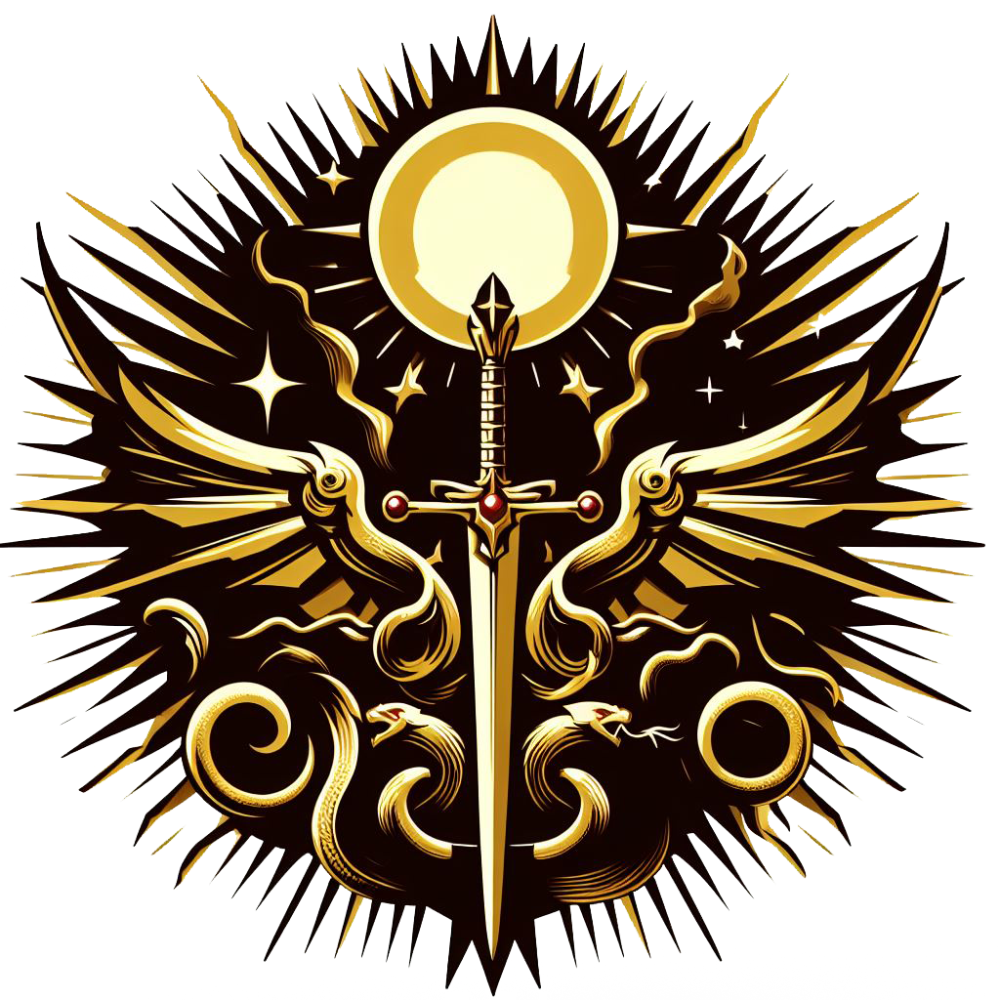

| Introduction |
|---|

Fae'Gir...In the aged pages of forgotten tomes, the tale of Fae'Gir is recounted, a name that whispers through the crevices of time. Since the dawn of written word, this name has endured, a mysterious echo resonating within the vast libraries safeguarding the histories of the realms. But from what hidden recess of creation did these intertwined letters originate? It remains an enigma, defying scholars' attempts to trace its roots. Thus, a popular belief emerged: Fae'Gir, the deity who descended upon the Empire, sowing the magical seed from which all else sprouted. Yet, the light attributed to Fae'Gir was tinged with relativity. In that realm, night held equal sway to day, and nocturnal beings intertwined with human destinies. Within that vast, eerie stage, the duality of existence unfolded like a tapestry of nightmares: light and darkness, life and death, order and chaos, an eternal dance written on blood-stained pages since time immemorial. Now, we're left with a world devoid of gods, ruled by greed, betrayal, and hardship. Every plain is a graveyard of nameless corpses, every forest a tomb of trees ready to consume those who dare enter. Here, survival demands a relentless struggle for belonging, where death lurks at every turn. |
| Factions |
|---|
Dark Zenith.
Zenith's Coat of Arms. In the deepest shadows of the map lies Zenith, a territory steeped in the darkest darkness. In this land, rituals intertwine with witchcraft in all its forms, from the mysteries of black magic to the sacrifices that stain the earth. The capital, Ebony Crown, shrouded in perpetual night woven by dark arts, becomes the refuge of all kinds of nocturnal creatures, such as vampires who give image to the bourgeoisie. Despite the apparent anarchy of these acts, society adheres to certain norms, although these only serve to sustain the corrupted heart of the kingdom. At this decadent peak, the aristocracy lives in opulence, while the lower sphere struggles in the shadow of misery, yet Zenith is the only place that offers total shelter to those blessed by magic, or who want to study its arts, as long as they do not allow the adversity of the night to overcome them. Authority in the empire had always been balanced in a delicate duo, with a representative of the common races, humans, elves, and others, and another of the nocturnal creatures, perpetuating their reign of shadows and secrets. However, recently, that balance has been disrupted. Where there were once two, now three reign, forming what is known as the Unholy Triad. A new and enigmatic member has joined their ranks, threatening to catapult the world into the same eternal night that envelops the Ebony Crown. Zenith's ultimate goal remains a magnet for devotees, drawing them like moths to the light... Or to the darkness: a world of magic, a dreamlike plane that welcomes each and every creature capable of facing adversity, regardless of their origin, without discriminating races, magics, and cultures, or the acts that have marked their path. Land of Dawns.

Lands' coat of arms. The Land of Dawns emerges as a bastion of resistance, a response to the darkness of Zenith. Born from a rebellion seeking to eradicate magic and everything associated with the dark kingdom, they turn to alchemy as a science that challenges and competes against arcane arts, in addition to having the blessing of Light, which clerics, knights, and paladins wield as a radiant weapon that purges evil. Gideon, the illustrious leader of this monarchy, leads the fight against magic, adopting a stance akin to a relentless inquisition. His vision is one of prosperity free from the yoke of nocturnal creatures, and the corruption, chaos, and destruction that, in his eyes, magic breeds in the hearts of people, using light as a guide and rejecting any shadow that dares to tarnish his kingdom. After migrating west as a united nation, and after fighting countless wars until they could settle, Gideon, with the help of The Golden Order, his most faithful and noble knights, and, of course, the fervent followers seeking to escape the yoke of Zenith, founded The Elysian City, capital of the Lands, at the farthest point from the Ebony Crown. This enclave stands as a beacon of hope in the Lands of Dawn, defying the darkness that threatened to plunge the world into eternal night. However, there is no room for magic in the idyllic world that Gideon and his followers seek to create. Through crusades and his inquisition, the only way out for those 'cursed' by witchery is death, or to undergo an alchemical ritual that would deprive them of all their magic for the rest of their lives. But any glimmer of 'good' in the lands of Fae'Gir is ephemeral: Gideon, the revered monarch, fell victim to a cruel ambush, a betrayal that whispered the shadow of the Triad. The king's wound, they say, bled not only blood, but darkness itself. Since that fateful day, the imposing figure of the king withdrew to the fortress of the Radiant Bastion, which stands as a guardian over the Elysian City. Months have passed since that bleak event, and although rumors suggest that Gideon still rules from the heights of the capital's towers, the absence of his radiant presence not only fuels gossip, but also reopens the door to the persistent threat of an eternal night looming on the horizon. In this murky scenario, uncertainty weaves its threads in the gloom, and the shadow of conspiracy looms like a cloak over the Land of Dawns. Northern Marches.
Marches' coat of arms. The vast lands of the Northern Marches, evoking the cold majesty of frozen tales, present themselves as a land rife with conflict, both due to the climate and the nature of its inhabitants. From this corner, where the northernmost borders freeze in perpetual twilight, life and history have woven a path of adversities and rivalries that have forged a people whose hardness surpasses the bounds of the ordinary. Regardless of who has claimed lordship over the frozen lands throughout the years, they have always had a common enemy: the plagues that ravage their homes and the aberrant creatures that come from beyond the frozen sea, gathering to rain misery upon the south. For this reason, the Northern Marches have always acted as a bastion between what is bred beyond the sea and all the lands of the south. But where once the realm was divided into houses with disparate goals, for two generations these tribulations have been quelled by a new event: the rise to power of House Vyrnaryn, who have managed to seize power and "unite" most these houses with a weapon that no one else in Fae'Gir possesses: tamed dragons, whose riders bear the blood of the Vyrnaryn. With their King, Halgrim the Stormbreaker, and Queen Milena of Vyrnaryn, their dynasty seeks to unite the people with an iron fist for a single purpose: to defend against the north and oppose the south. Now, wishing to remain apart from the "childish games" played between the Dawnlands and the Dark Zenith, they focus on unifying the northern lands to rise as the independent bastion they have always sought to be, awaiting the time when the evil of the north descends upon the continent. Free Kingdoms.
Symbol that represents the Free Kingdoms. In the Free Realms, vast expanses where autonomy is the norm, shelters rise that defy the bindings of the three main alliances. They are cities or influential groups that have managed not to affiliate themselves with or follow the rules of any of the three main Alliances. For example, Black Bay stands as a bold bastion for sea dogs, those who refuse to bow to imposed laws. In this daring corner, turbulent waters welcome those who proudly wave the pirate flag without restrictions. Here, the pirate hierarchy establishes its own order, defying conventions and charting its destiny on the treacherous waves of the ocean. Autonomy reigns in this refuge, where loyalty is earned with cunning and authority is asserted with bravery, far from the influences of dominant alliances. In contrast, the Woodlands, also part of the Free Realms, harbor those who seek communion with nature and reject any subjugation to established alliances. Here, among the whispers of ancient trees, druids find their home, maintaining a sacred balance with the land and resisting the impositions of the realms. In the Woodlands, autonomy manifests in harmony with nature. Decisions are guided by the whisper of leaves, and forest creatures are allies in the struggle against any attempt at conquest. Druids, as guardians of these enchanted forests, intertwine their destiny with the eternal flow of life, defending the independence of their domains. These independent places, whether Black Bay with its unrestricted pirate flag waving or the Woodlands with its druids resisting in the twilight of ancient trees, forge their own narratives in the fabric of time. By not affiliating with any of the three main alliances, they stand as witnesses and protagonists of the freedom that prevails in the Free Realms, tracing their destiny in the freedom of treacherous waves or in the eternal harmony of nature. |